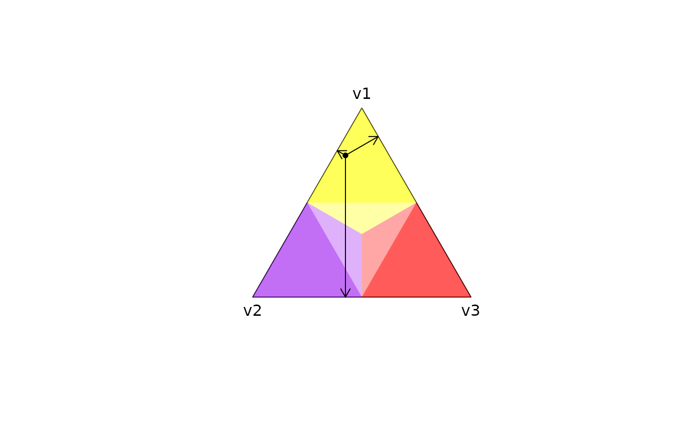

Project 3D probability coordinates onto 2D simplex coordinates
Source:R/plot_simplex.R
project2D.RdProject three probabilities that sum to one (e.g., per-recurrence probabilities of recrudescence, relapse and reinfection) onto the coordinates of a 2D simplex centred at the origin (i.e., a triangle centred at (0,0) with unit-length sides).
Value
A numeric vector of two coordinates that can be used to plot the
probability vector v on the origin-centred 2D simplex.
Details
The top, left, and right vertices of the 2D simplex correspond with the
first, second and third entries of v, respectively. Each probability is
proportional to the distance from the point on the simplex to the side
opposite the corresponding probability; see Examples below and
plot_simplex() for more details.
Examples
probabilities_of_v1_v2_v3 <- c(0.75,0.20,0.05)
coordinates <- project2D(v = probabilities_of_v1_v2_v3)
# Plot probability vector on 2D simplex
plot_simplex(v.labels = c("v1", "v2", "v3"))
points(x = coordinates[1], y = coordinates[2], pch = 20)
# Plot the distances that represent probabilities
# get vertices, get points on edges by orthogonal projection, plot arrows
v <- apply(matrix(c(1,0,0,0,1,0,0,0,1), nrow = 3), 1, project2D)
p3 <- v[,1] + sum((coordinates - v[,1]) * (v[,2] - v[,1])) * (v[,2] - v[,1])
p1 <- v[,2] + sum((coordinates - v[,2]) * (v[,3] - v[,2])) * (v[,3] - v[,2])
p2 <- v[,3] + sum((coordinates - v[,3]) * (v[,1] - v[,3])) * (v[,1] - v[,3])
arrows(x0 = coordinates[1], y0 = coordinates[2], x1 = p1[1], y1 = p1[2], length = 0.1)
arrows(x0 = coordinates[1], y0 = coordinates[2], x1 = p2[1], y1 = p2[2], length = 0.1)
arrows(x0 = coordinates[1], y0 = coordinates[2], x1 = p3[1], y1 = p3[2], length = 0.1)
